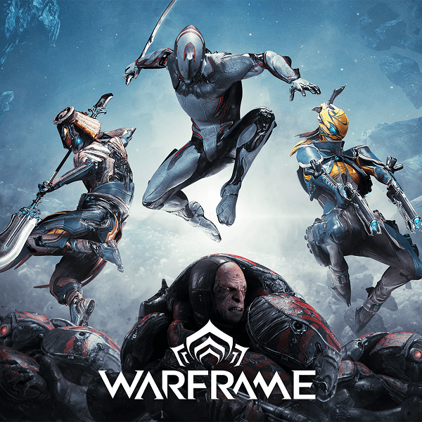

Este jogo é absolutamente incrível. Ele tem uma quantidade enorme de conteúdo, que pode ser opressor no começo, mas este jogo tem mais jogadores úteis que ficam felizes em ajudar do que qualquer outro rpg online que joguei em décadas. OH SIM, a melhor parte é ..... é GRÁTIS! Portanto, você literalmente não tem nada a perder, exceto talvez seu tempo, mas duvido muito que seja o caso deste jogo maravilhoso. Para outros usuários do Nintendo Switch: Se você é como eu, provavelmente ficou chateado por não podermos jogar Destiny, mas não se preocupe mais, porque Warframe é melhor, mais barato e tem uma base de jogadores muito melhor. Por favor, experimente e não desanime se parecer demais, resista e o jogo se abrirá em algo bonito e fornecerá um ambiente extremamente envolvente. O Warframe é um sistema avançado de armas usado exclusivamente pelos Tenno em suas missões em todo o Sistema Origem. Os Warframes possuem escudos regenerativos, mobilidade muito aprimorada e permitem o uso de uma variedade de habilidades sobrenaturais; todos os quais aumentam ainda mais o uso mortal das artes de combate tradicionais por Tenno. Uma misteriosa armadura armada controlada exclusivamente pelo Tenno. Através do Warframe, Tenno pode enganar a morte, canalizar as energias proibidas do Void e enfrentar dezenas de inimigos sem fadiga. Devido a aparentes resistências de seus exoesqueletos de Bio-Metal, os Warframes podem ser implantados com segurança nos Surtos de Infestação, caso ocorram. Informações detalhadas do mandato do Warframe são proibidas a todos, exceto aos Sete.